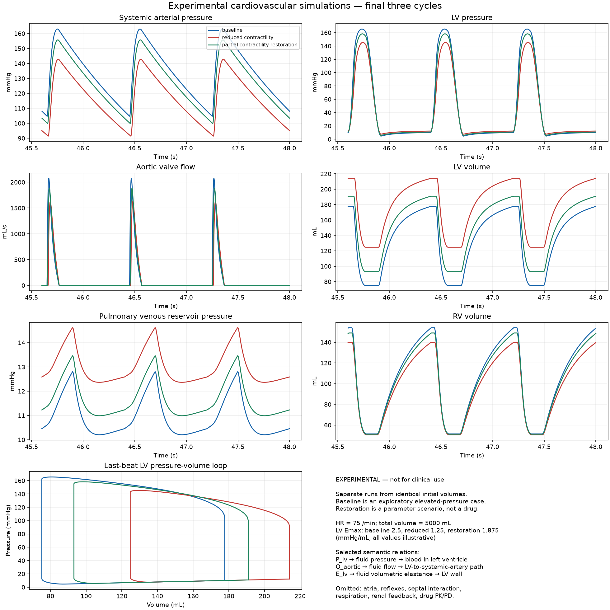
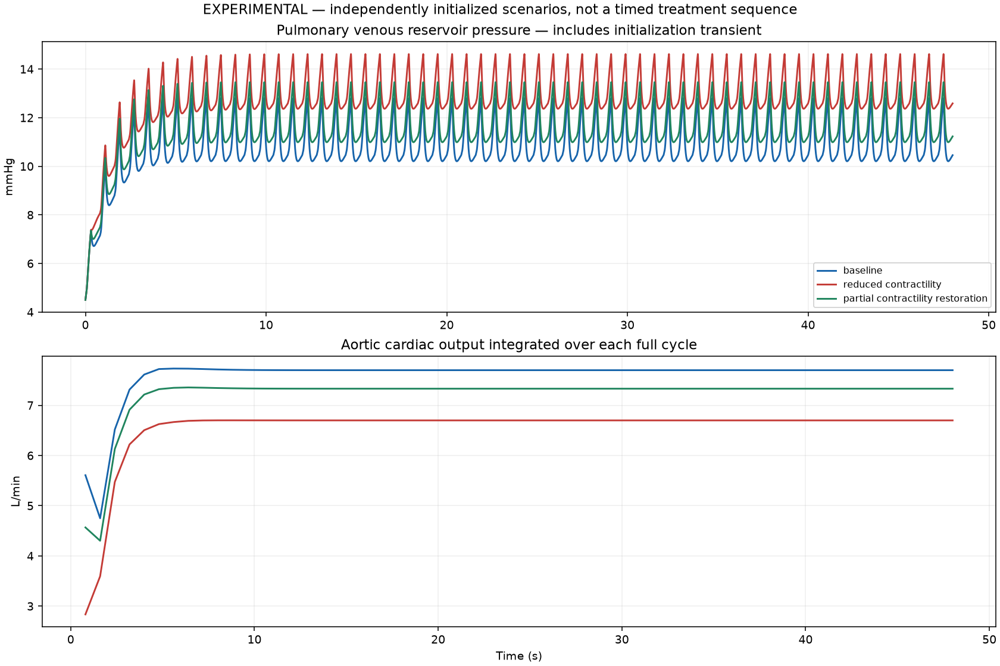

Research and education only. No clinical validity established. All numerical defaults are exploratory. Baseline has elevated pressure and is not a healthy reference. Independent parameter scenarios are not a timed treatment-response simulation.
| Scenario | CO (L/min) | Forward SV (mL) | Periodicity |
|---|---|---|---|
| baseline | 7.6993 | 102.658 | periodic_within_declared_gate |
| reduced_contractility | 6.6993 | 89.325 | periodic_within_declared_gate |
| partial_contractility_restoration | 7.3310 | 97.746 | periodic_within_declared_gate |


Six compartments; synchronous prescribed elastance; linear vascular compliance; four ideal diode valves; fixed external pressure zero. No atria, baroreflex, renal regulation, septal interaction, respiration or drug pharmacokinetics. Pulmonary venous pressure is a reservoir variable, not measured left-atrial pressure. Metadata checks cannot detect falsely labeled numerical data.
{
"experimental": true,
"clinical_validity": "not established",
"baseline_interpretation": "Exploratory elevated-pressure reference; not a normal healthy adult",
"scenario_design": "Independent runs from identical initial volumes; changes applied at simulation time zero",
"config": {
"cycles": 60,
"samples_per_cycle": 400,
"rtol": 1e-09,
"atol": 1e-10,
"max_step_fraction": 0.005,
"periodicity_tolerance_ml": 0.1
},
"solver": "DOP853",
"all_periodic": true,
"periodicity_definition": "maximum absolute six-volume difference between last two sampled beat waveforms",
"scenarios": {
"baseline": {
"parameters": {
"heart_rate": 75.0,
"emin_lv": 0.06,
"emax_lv": 2.5,
"emin_rv": 0.03,
"emax_rv": 0.8,
"systolic_fraction": 0.4,
"compliance_sa": 1.5,
"compliance_sv": 100.0,
"compliance_pa": 5.0,
"compliance_pv": 20.0,
"resistance_aortic": 0.01,
"resistance_systemic": 1.0,
"resistance_tricuspid": 0.01,
"resistance_pulmonary_valve": 0.01,
"resistance_pulmonary": 0.1,
"resistance_mitral": 0.01,
"unstressed_volumes": [
10.0,
700.0,
2500.0,
10.0,
100.0,
400.0
],
"initial_volumes": [
140.0,
850.0,
3200.0,
140.0,
180.0,
490.0
]
},
"changes": [],
"metrics": {
"heart_rate_bpm": 75.0,
"stroke_volume_ml": 102.65751198454987,
"cardiac_output_l_min": 7.699313398841268,
"cardiac_output_m3_s": 0.00012832188998068779,
"lv_edv_ml": 177.73485172537997,
"lv_esv_ml": 75.13491056135032,
"lv_ejection_fraction": 0.57726405467487,
"systemic_systolic_pressure_mmhg": 163.00977619235437,
"systemic_diastolic_pressure_mmhg": 104.70270100399655,
"systemic_mean_pressure_mmhg": 133.49919202970068,
"pulmonary_mean_pressure_mmhg": 23.76309372242614,
"pulmonary_venous_mean_pressure_mmhg": 10.938102139247901,
"volume_drift_ml": 1.546140993013978e-11,
"final_beat_max_volume_difference_ml": 2.2905086780156125e-05
},
"audit": {
"volume_drift_ml": 1.546140993013978e-11,
"volume_tolerance_ml": 1e-06
},
"connected_CO_l_min": 7.699313398841267,
"status": "periodic_within_declared_gate"
},
"reduced_contractility": {
"parameters": {
"heart_rate": 75.0,
"emin_lv": 0.06,
"emax_lv": 1.25,
"emin_rv": 0.03,
"emax_rv": 0.8,
"systolic_fraction": 0.4,
"compliance_sa": 1.5,
"compliance_sv": 100.0,
"compliance_pa": 5.0,
"compliance_pv": 20.0,
"resistance_aortic": 0.01,
"resistance_systemic": 1.0,
"resistance_tricuspid": 0.01,
"resistance_pulmonary_valve": 0.01,
"resistance_pulmonary": 0.1,
"resistance_mitral": 0.01,
"unstressed_volumes": [
10.0,
700.0,
2500.0,
10.0,
100.0,
400.0
],
"initial_volumes": [
140.0,
850.0,
3200.0,
140.0,
180.0,
490.0
]
},
"changes": [
{
"name": "Reduced LV contractility",
"target": "emax_lv",
"factor": 0.5,
"mechanism": "Maximum LV systolic elastance",
"rationale": "Exploratory isolated contractility impairment; not a clinical heart-failure diagnosis",
"limitations": "Exploratory parameter change; not a drug-dose or clinical outcome prediction.",
"before": 2.5,
"after": 1.25,
"time_s": 0
}
],
"metrics": {
"heart_rate_bpm": 75.0,
"stroke_volume_ml": 89.32464668175137,
"cardiac_output_l_min": 6.699348501131377,
"cardiac_output_m3_s": 0.0001116558083521896,
"lv_edv_ml": 214.0823293599992,
"lv_esv_ml": 124.70492862960826,
"lv_ejection_fraction": 0.41749078963025754,
"systemic_systolic_pressure_mmhg": 142.82899395888822,
"systemic_diastolic_pressure_mmhg": 91.42413034475422,
"systemic_mean_pressure_mmhg": 116.43359848386868,
"pulmonary_mean_pressure_mmhg": 24.17095161514612,
"pulmonary_venous_mean_pressure_mmhg": 12.998776337882521,
"volume_drift_ml": 2.3646862246096134e-11,
"final_beat_max_volume_difference_ml": 9.568865209530486e-06
},
"audit": {
"volume_drift_ml": 2.3646862246096134e-11,
"volume_tolerance_ml": 1e-06
},
"connected_CO_l_min": 6.699348501131376,
"status": "periodic_within_declared_gate"
},
"partial_contractility_restoration": {
"parameters": {
"heart_rate": 75.0,
"emin_lv": 0.06,
"emax_lv": 1.875,
"emin_rv": 0.03,
"emax_rv": 0.8,
"systolic_fraction": 0.4,
"compliance_sa": 1.5,
"compliance_sv": 100.0,
"compliance_pa": 5.0,
"compliance_pv": 20.0,
"resistance_aortic": 0.01,
"resistance_systemic": 1.0,
"resistance_tricuspid": 0.01,
"resistance_pulmonary_valve": 0.01,
"resistance_pulmonary": 0.1,
"resistance_mitral": 0.01,
"unstressed_volumes": [
10.0,
700.0,
2500.0,
10.0,
100.0,
400.0
],
"initial_volumes": [
140.0,
850.0,
3200.0,
140.0,
180.0,
490.0
]
},
"changes": [
{
"name": "Reduced LV contractility",
"target": "emax_lv",
"factor": 0.5,
"mechanism": "Maximum LV systolic elastance",
"rationale": "Exploratory isolated contractility impairment; not a clinical heart-failure diagnosis",
"limitations": "Exploratory parameter change; not a drug-dose or clinical outcome prediction.",
"before": 2.5,
"after": 1.25,
"time_s": 0
},
{
"name": "Partial contractility restoration",
"target": "emax_lv",
"factor": 1.5,
"mechanism": "Maximum LV systolic elastance",
"rationale": "Illustrative increase relative to impaired parameter; independent run, not a timed drug treatment",
"limitations": "Exploratory parameter change; not a drug-dose or clinical outcome prediction.",
"before": 1.25,
"after": 1.875,
"time_s": 0
}
],
"metrics": {
"heart_rate_bpm": 75.0,
"stroke_volume_ml": 97.7463072345066,
"cardiac_output_l_min": 7.33097304258802,
"cardiac_output_m3_s": 0.00012218288404313368,
"lv_edv_ml": 190.91920833449768,
"lv_esv_ml": 93.13592382843385,
"lv_ejection_fraction": 0.512171013902089,
"systemic_systolic_pressure_mmhg": 155.73361473909677,
"systemic_diastolic_pressure_mmhg": 99.85324232394373,
"systemic_mean_pressure_mmhg": 127.28245082208977,
"pulmonary_mean_pressure_mmhg": 23.908034103067326,
"pulmonary_venous_mean_pressure_mmhg": 11.685124536522242,
"volume_drift_ml": 3.183231456205249e-11,
"final_beat_max_volume_difference_ml": 9.263523878644264e-06
},
"audit": {
"volume_drift_ml": 3.183231456205249e-11,
"volume_tolerance_ml": 1e-06
},
"connected_CO_l_min": 7.33097304258802,
"status": "periodic_within_declared_gate"
}
},
"annotated_variable_count": 34
}
External concept labels are source-verified; aggregate compartments and several quantities are explicitly local extensions. Project relations are not imported ontology entailments.
| Variable | Anatomy | Property | Unit | Equation |
|---|---|---|---|---|
| V_lv | Left ventricle | Fluid volume | mL | dV/dt = Q_in - Q_out |
| P_lv | Left ventricle | Fluid pressure | mmHg | P = E(t)*(V - V0) |
| E_lv | Left ventricle | Fluid volumetric elastance | mmHg/mL | E(t) = Emin + (Emax-Emin)*activation(t,HR) |
| V_rv | Right ventricle | Fluid volume | mL | dV/dt = Q_in - Q_out |
| P_rv | Right ventricle | Fluid pressure | mmHg | P = E(t)*(V - V0) |
| E_rv | Right ventricle | Fluid volumetric elastance | mmHg/mL | E(t) = Emin + (Emax-Emin)*activation(t,HR) |
| V_sa | Lumped systemic arterial compartment | Fluid volume | mL | dV/dt = Q_in - Q_out |
| P_sa | Lumped systemic arterial compartment | Fluid pressure | mmHg | P = (V - V0)/C |
| C_sa | Lumped systemic arterial compartment | Fluid volume compliance | mL/mmHg | C = dV/dP; constant linear reservoir compliance |
| V_sv | Lumped systemic venous compartment | Fluid volume | mL | dV/dt = Q_in - Q_out |
| P_sv | Lumped systemic venous compartment | Fluid pressure | mmHg | P = (V - V0)/C |
| C_sv | Lumped systemic venous compartment | Fluid volume compliance | mL/mmHg | C = dV/dP; constant linear reservoir compliance |
| V_pa | Lumped pulmonary arterial compartment | Fluid volume | mL | dV/dt = Q_in - Q_out |
| P_pa | Lumped pulmonary arterial compartment | Fluid pressure | mmHg | P = (V - V0)/C |
| C_pa | Lumped pulmonary arterial compartment | Fluid volume compliance | mL/mmHg | C = dV/dP; constant linear reservoir compliance |
| V_pv | Lumped pulmonary venous compartment | Fluid volume | mL | dV/dt = Q_in - Q_out |
| P_pv | Lumped pulmonary venous compartment | Fluid pressure | mmHg | P = (V - V0)/C |
| C_pv | Lumped pulmonary venous compartment | Fluid volume compliance | mL/mmHg | C = dV/dP; constant linear reservoir compliance |
| Q_aortic | Model flow path lv to sa | Fluid flow rate | mL/s | Q = max(P_up-P_down,0)/R |
| R_aortic | Model flow path lv to sa | Fluid flow resistance | mmHg*s/mL | R = pressure_drop / flow |
| Q_systemic | Model flow path sa to sv | Fluid flow rate | mL/s | Q = (P_up-P_down)/R |
| R_systemic | Model flow path sa to sv | Fluid flow resistance | mmHg*s/mL | R = pressure_drop / flow |
| Q_tricuspid | Model flow path sv to rv | Fluid flow rate | mL/s | Q = max(P_up-P_down,0)/R |
| R_tricuspid | Model flow path sv to rv | Fluid flow resistance | mmHg*s/mL | R = pressure_drop / flow |
| Q_pulmonary_valve | Model flow path rv to pa | Fluid flow rate | mL/s | Q = max(P_up-P_down,0)/R |
| R_pulmonary_valve | Model flow path rv to pa | Fluid flow resistance | mmHg*s/mL | R = pressure_drop / flow |
| Q_pulmonary | Model flow path pa to pv | Fluid flow rate | mL/s | Q = (P_up-P_down)/R |
| R_pulmonary | Model flow path pa to pv | Fluid flow resistance | mmHg*s/mL | R = pressure_drop / flow |
| Q_mitral | Model flow path pv to lv | Fluid flow rate | mL/s | Q = max(P_up-P_down,0)/R |
| R_mitral | Model flow path pv to lv | Fluid flow resistance | mmHg*s/mL | R = pressure_drop / flow |
| HR | Heart | Event frequency | 1/min | T_seconds = 60 / HR_per_minute |
| CO | Left ventricle | Cycle-mean aortic outflow | mL/s | CO = integral(Q_aortic, complete_beat)/T |
| SV | Left ventricle | Left ventricular stroke volume per complete beat | mL | SV = integral(Q_aortic, complete_beat) |
| V_total | Closed six-compartment blood circulation | Fluid volume | mL | V_total = sum(V_i) |